# import standard Python packages
import os
import sys
import subprocess
from pathlib import Path
# check where GRASS python packages are and add them to PATH
sys.path.append(
subprocess.check_output(["grass", "--config", "python_path"], text=True).strip()
)
# import GRASS python packages
import grass.script as gs
import grass.jupyter as gj
from grass.tools import ToolsEstimating Wind Fetch
Python
advanced
ecology
engineering
Wind fetch — the distance wind blows across open water — is a key factor in wave generation and shoreline exposure. We will estimate it using GRASS r.windfetch addon.
Introduction
Wind fetch — the distance wind blows across open water — is a key factor in wave generation and shoreline exposure. It is widely used in coastal engineering to estimate wave height, and in ecology to assess habitat vulnerability to wave energy. This tutorial demonstrates how to use the r.windfetch addon in GRASS to compute fetch lengths for a case study on the North Carolina coast.
We will:
- Set up a GRASS project for North Carolina.
- Import elevation data to derive land and water areas.
- Download a wind rose.
- Estimate a weighted wind fetch for a selected point on the coast.
- Derive weighted wind fetch for part of the coastline.
- Visualize the results.
This approach demonstrates how to leverage new Python API features introduced in GRASS 8.5—specifically, the Tools API and the RegionManager context manager.
NoteHow to run this tutorial?
This tutorial is prepared to be run in a Jupyter notebook locally or using services such as Google Colab. You can download the notebook here.
If you are not sure how to get started with GRASS, checkout the tutorials Get started with GRASS & Python in Jupyter Notebooks and Get started with GRASS in Google Colab.
Setup
Start with importing Python packages. To import the grass package, you need to tell Python where the GRASS Python package is (can be skipped for some environments).
We will switch our working directory to a directory with enough space, this is where we will download the datasets and create our GRASS project.
os.chdir("path/to/data")Now create a GRASS project called windfetch with a Coordinate Reference System (CRS) used in North Carolina (EPSG 32119). We create a new GRASS project for the tutorial. The EPSG code 32119 corresponds to NAD83 / North Carolina, a suitable projection for working in this region. Then we initialize the GRASS session in Jupyter, pointing it to the newly created project. This sets up the working environment.
gs.create_project("windfetch", epsg="32119")
gj.init("windfetch")Study area
We download a shapefile of US state boundaries from the U.S. Census Bureau TIGER/Line dataset. This gives us a polygon map of all states, from which we can extract North Carolina. This data will help us define our study area.
import urllib.request
import zipfile
from pathlib import Path
url = "https://www2.census.gov/geo/tiger/GENZ2024/shp/cb_2024_us_state_20m.zip"
states_filename, headers = urllib.request.urlretrieve(url)
with zipfile.ZipFile(states_filename, "r") as zip_ref:
zip_ref.extractall()
os.remove(states_filename)
states_filename = Path(url).with_suffix(".shp").nameWe create a Tools object that lets us call GRASS tools as Python functions (e.g., tools.v_import instead of running v.import at the command line).
tools = Tools()
tools.v_import(input=states_filename, output="states")
NoteRunning GRASS 8.4?
This tutorial uses new API available since GRASS 8.5. If you are running GRASS 8.4, you can use the shell-like tool calling API instead. So instead of tools.v_import(input=states_filename, output="states"), you can use gs.run_command("v.import", input=states_filename, output="states").
We query the attribute table of the states map and display it as a Pandas DataFrame. This lets us inspect column and state names.
import pandas as pd
pd.DataFrame(tools.v_db_select(map="states", format="json")["records"])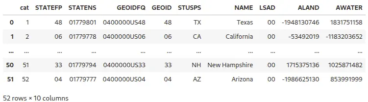
We extract North Carolina boundaries into a new vector map NC and display the North Carolina polygon in an interactive map widget, verifying that the state boundary was exported correctly.
tools.v_extract(input="states", output="NC", where="name == 'North Carolina'")
NC_map = gj.InteractiveMap()
NC_map.add_vector("NC")
NC_map.show()Providing you have ipyleaflet installed, you can interactively set the extent of the computational region, selecting area around Core Sound, part of the Outer Banks of North Carolina. You need to select sufficiently large area to allow for the correct fetch computation. You can also set the region directly:
tools.g_region(n=152610, s=94020, w=811200, e=876330)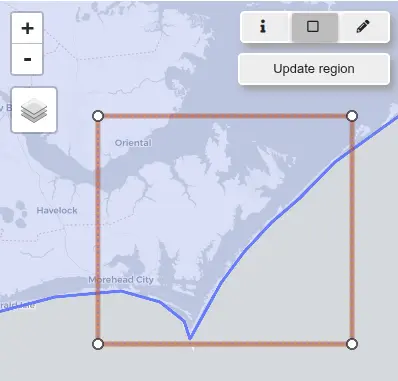
Elevation data
One of the important inputs to r.windfetch is a binary raster representing land (1) and water (0). If the land polygons are not readily available, or they are not detailed enough, this raster can be easily derived from an elevation raster.
We install the r.in.usgs addon, which provides convenient access to elevation data (USGS NED/3DEP) directly from within GRASS.
tools.g_extension(extension="r.in.usgs")This addon will download elevation data based on the extent of the current computational region. The resolution of the imported dataset is set automatically based on the type of elevation product. In our case we will use the 1 arc-second NED product corresponding to approximately 30 meters.
We run r.in.usgs with the -i flag to list available elevation datasets (here, the NED product). This lets us see what tiles are available for our region (the output may be different in the future as the data is updated by USGS).
print(tools.r_in_usgs(flags="i", product="ned", ned_dataset="ned1sec").text)USGS file(s) to download:
-------------------------
Total download size: 58.40 MB
Tile count: 4
USGS SRS: wgs84
USGS tile titles:
USGS 1 Arc Second n35w077 20250507
USGS 1 Arc Second n36w077 20250507
USGS 1 arc-second n35w077 1 x 1 degree
USGS 1 arc-second n36w077 1 x 1 degree
-------------------------We remove the flag and rerun r.in.usgs to actually download and import the data. We filter the data to only include the tiles with “degree” in the title name.
tools.r_in_usgs(
product="ned",
output_name="ned",
ned_dataset="ned1sec",
title_filter="degree",
nprocs=2,
)Let’s look at the data we just downloaded. We will display only elevation values larger than 0:
ned_map = gj.Map()
ned_map.d_background(color="aqua")
ned_map.d_rast(map="ned", values="0.0001-100")
ned_map.show()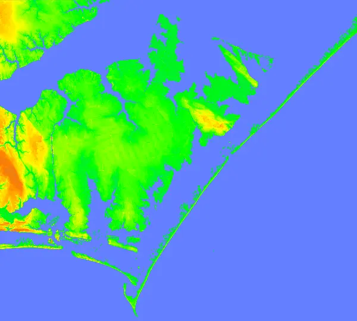
Set computational region to match the extent and resolution of the NED dataset.
tools.g_region(raster="ned")We derive the land/water raster using raster algebra with r.mapcalc. Values above sea level are set to 1 (land), while sea level and below are 0 (water). This prepares the key input raster for r.windfetch.
tools.r_mapcalc(expression="land = if(ned > 0, 1, 0)")
ned_map = gj.Map()
ned_map.d_rast(map="land")
ned_map.show()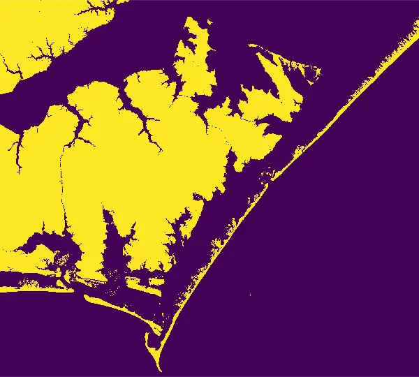
Wind data
Wind roses show the frequency of winds from different directions, and at different speeds, over a given period of time (NC Air Quality Portal). We will use this information to compute wind fetch weighted by the percentage of wind observed from the different directions.
We will use wind rose dataset (CSV) for station KMRH (Beaufort, NC) that is near our study area. The file can be downloaded here or accessed from NC Air Quality Portal.
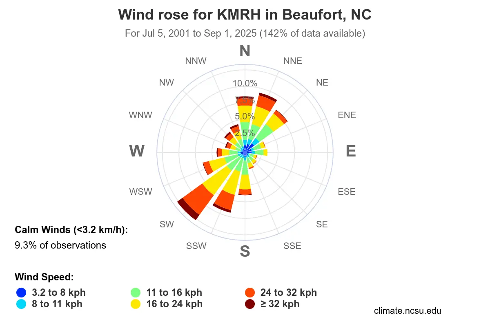
First, read the CSV file into a Pandas DataFrame.
wind_df = pd.read_csv("windrose_KMRH_2001-07-05_2025-09-01.csv")
wind_dfWe calculate the total frequency of winds per direction sector by summing across the available columns. This gives us the relative importance of each direction.
wind_df["total"] = wind_df.sum(axis=1, numeric_only=True)We add a directions column, assigning compass angles to each wind sector. Here, each sector is 22.5° apart (16 sectors total). We round the angles to integers to match the integer directions used by r.windfetch.
We also convert wind directions from the meteorological “from” convention to the “to” convention by adding 180°, so they align with fetch measurements pointing toward open water.
wind_df["directions"] = [round(i * 22.5) for i in range(len(wind_df))]
wind_df["directions"] = (wind_df["directions"] + 180) % 360
wind_df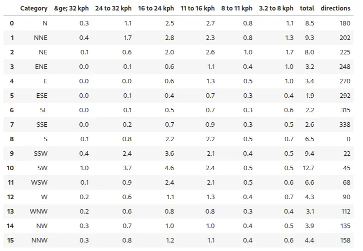
Wind fetch analysis for a single point
We install r.windfetch addon, which computes wind fetch distances over water for given input points and directions.
tools.g_extension(extension="r.windfetch")We will select a point interactively and export to a vector map point. Make sure the point is located somewhere along the coast on water, not land. This point will serve as a location to compute wind fetch in different directions.
ned_map = gj.InteractiveMap()
ned_map.add_raster("land")
ned_map.show()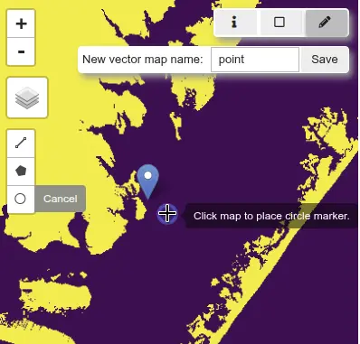
Alternatively create a vector point with:
import io
tools.v_in_ascii(input=io.StringIO("838658,112214"), output="point", separator="comma")The effective fetch is computed by averaging multiple radials spread around the main wind direction. In r.windfetch, this is controlled by two parameters:
- minor_directions – total number of radials used to compute effective fetch (including the central/main radial).
- minor_step – angular spacing between adjacent radials (in degrees).
Common configurations (based on U.S. Army Corps of Engineers Shore Protection Manual):
| Method | minor_directions | minor_step | arc width |
|---|---|---|---|
| SPM | 9 | 3° | 24° |
| SPM-restricted | 5 | 3° | 12° |
| Single radial | 1 | – | 0° |
The broader arc (SPM) generally better reflects real-world spreading of wave energy, while the narrower arc (SPM-restricted) can be more appropriate in environments with long, narrow fetches such as estuaries or channels.
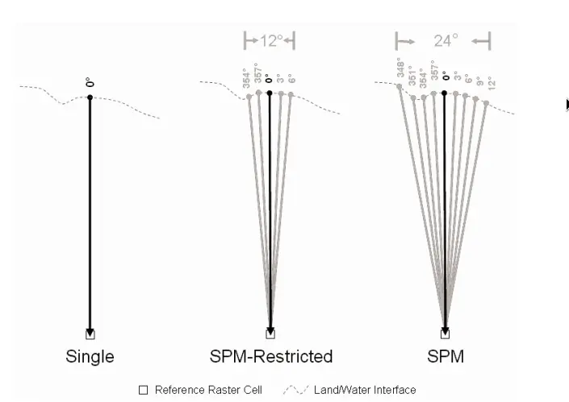
We run r.windfetch from the selected point with the SPM configuration. The output is returned as JSON, which we capture in a Python dictionary. Flag c tells r.windfetch to use compass directions (clockwise from North).
point_fetch = tools.r_windfetch(
input="land",
points="point",
format="json",
step=1,
minor_directions=9,
minor_step=3,
flags="c",
)[0]We convert the r.windfetch output into a Pandas DataFrame for easier inspection. Each row corresponds to a direction and its computed fetch length (in meters).
fetch_df = pd.DataFrame(
{"directions": point_fetch["directions"], "fetch": point_fetch["fetch"]}
)
fetch_dfWe create a polar plot (rose diagram) of fetch lengths. This visualization shows, for the selected point, how far wind can blow unobstructed in different directions. Image below shows a rose diagram for the SPM and SPM-restricted configurations.
import matplotlib.pyplot as plt
import numpy as np
directions = np.deg2rad(point_fetch["directions"])
ax = plt.subplot(111, polar=True)
ax.plot(directions, point_fetch["fetch"], marker="o", linestyle="-")
ax.fill(directions, point_fetch["fetch"], alpha=0.3)
ax.set_theta_zero_location("E")
ax.set_theta_direction(1)
ax.set_title("Wind fetch", va="bottom")
plt.show()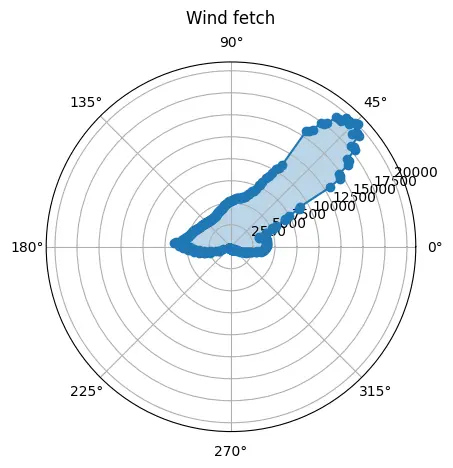
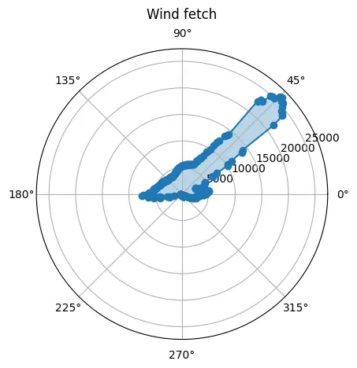
We join the wind rose data with the fetch results by matching directions. This allows us to combine how often wind blows from a direction with how far it can travel.
merged_df = pd.merge(wind_df, fetch_df, on="directions", how="inner")We compute weighted fetch: multiplying fetch length by wind frequency (percentage). This creates an effective measure of wave-generating potential.
merged_df["weighted_fetch"] = merged_df["fetch"] * merged_df["total"] / 100We calculate the overall effective fetch for the point by summing across all wind directions. This produces a single index summarizing wave exposure, integrating both shoreline geometry and real wind climate.
merged_df["weighted_fetch"].sum()At this point, the tutorial has shown a full workflow: preparing data, running r.windfetch, and combining with wind rose data.
Wind fetch for points along a coastline
Now we will create vector point map with points along a coastline. We will select only part of the coastline, focusing on a section of Carteret county, North Carolina, within our study area. Specifically we will select a single census tract.
Download NC tract boundaries:
url = "https://www2.census.gov/geo/tiger/TIGER2024/TRACT/tl_2024_37_tract.zip"
tracts_filename, headers = urllib.request.urlretrieve(url)
with zipfile.ZipFile(tracts_filename, "r") as zip_ref:
zip_ref.extractall()
os.remove(tracts_filename)
tracts_filename = Path(url).with_suffix(".shp").nameWe will import only tracts that fall in our study area (i.e. within our current computational region extent).
tools.v_import(input=tracts_filename, output="tracts", extent="region")Display the tracts, select one and and find its GEOID:
point_map = gj.InteractiveMap()
point_map.add_vector("tracts")
point_map.show()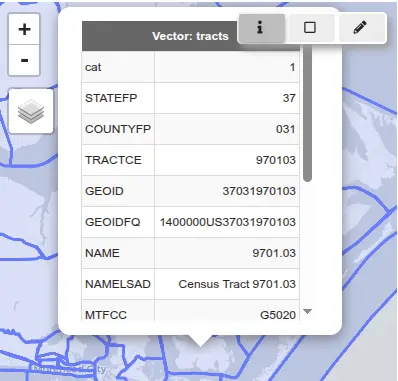
Extract the tract:
tools.v_extract(input="tracts", output="tract", where="GEOID = 37031970103")We will create a vector map of points along the coastline by first growing a single-cell buffer along the coast. This ensures the points fall on water. The buffer cells are then vectorized into points. The r.buffer tool creates cells with value 1 (original land) and value 2 (buffer). We set cells with value 1 to null, leaving only the coastal points.
We use a RegionManager context manager to temporarily set the computational region extent to the tract vector and aligning the raster grid to the land map. This ensures that the buffer is computed only within the tract extent but the fetch analysis will be using land data on the full study area.
with gs.RegionManager(vector="tract", align="land"):
tools.r_buffer(flags="z", input="land", output="buffer", distances=30)
tools.r_null(map="buffer", setnull=1)
tools.r_to_vect(flags="t", input="buffer", output="points", type="point")Next, we compute the wind fetch for each point in the vector map using the SPM setting.
points_fetch = tools.r_windfetch(
input="land",
points="points",
format="json",
step=1,
minor_directions=9,
minor_step=3,
flags="c",
)Similarly to the previous example, we will load fetch data into a Pandas DataFrame. Since we are getting a list (fetch data for each point), we will use the explode function to transform the list into a DataFrame.
fetch_df = pd.DataFrame(points_fetch)
fetch_df = fetch_df.explode(["directions", "fetch"], ignore_index=True)
fetch_df = fetch_df.rename(columns={"directions": "directions"})We will join the wind rose data with the fetch results by matching directions.
merged_df = pd.merge(wind_df, fetch_df, on="directions", how="inner")
merged_df["weighted_fetch"] = merged_df["fetch"] * merged_df["total"] / 100
merged_dfWe can now calculate the overall effective fetch for each point by summing across all wind directions.
merged_df = merged_df.groupby(["x", "y"], as_index=False)["weighted_fetch"].sum()Visualization
Final step is visualizing the data in a web map.
We will convert the DataFrame to GeoJSON in EPSG:4326. First, we will create a CSV text file from the DataFrame and convert it into a GRASS vector map. Then, we will convert the vector map to GeoJSON, ensuring the CRS is set to EPSG:4326 (ensured by specifying the RFC7946 standard).
merged_df.to_csv("results.txt", index=False)
tools.v_in_ascii(
input="results.txt",
output="results",
separator="comma",
columns="x double, y double, fetch double",
skip=1,
)
tools.v_out_ogr(
input="results", output="results.json", format="GeoJSON", lco="RFC7946=YES"
)We will use folium to create an interactive map. The darker colors represent higher fetch values.
import geopandas as gpd
import folium
import branca.colormap as cm
# Load GeoJSON
gdf = gpd.read_file("results.json")
values = gdf["fetch"]
colormap = cm.linear.YlGnBu_07.scale(values.min(), values.max())
colormap.caption = "Weighted Fetch"
# Center map at the mean location
m = folium.Map(
location=[gdf.geometry.y.mean(), gdf.geometry.x.mean()],
zoom_start=12,
tiles="CartoDB positron",
)
# Add points
for _, row in gdf.iterrows():
folium.CircleMarker(
location=(row.geometry.y, row.geometry.x),
radius=5,
weight=0,
fill=True,
fill_color=colormap(row["fetch"]),
fill_opacity=0.7,
tooltip=f"Weighted Fetch: {row['fetch']:.2f}"
).add_to(m)
# Add colormap legend
colormap.add_to(m)
m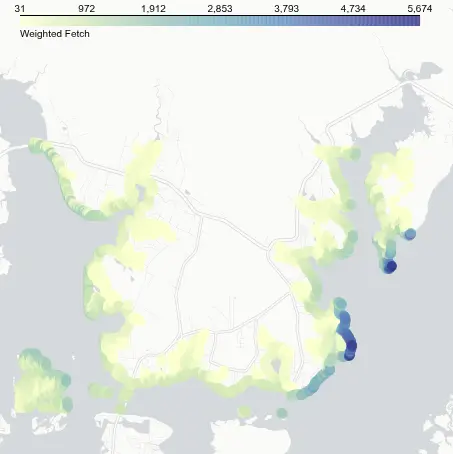
Note that estuaries have much lower fetch values, while the highest fetch occurs along the east coast of Bells and Davis Islands, driven by the northeast orientation of Core Sound and the prevailing winds.
References
- Rohweder, J., Rogala, J. T., Johnson, B. L., Anderson, D., Clark, S., Chamberlin, F., Potter, D., and Runyon, K., 2012, Application of Wind Fetch and Wave Models for Habitat Rehabilitation and Enhancement Projects – 2012 Update. Contract report prepared for U.S. Army Corps of Engineers’ Upper Mississippi River Restoration – Environmental Management Program. 52 p.
Acknowledgements
The development of this tutorial was supported by NSF Award #2322073, granted to Natrx, Inc.
NC coastline photo by Samuel Cruz on Unsplash.